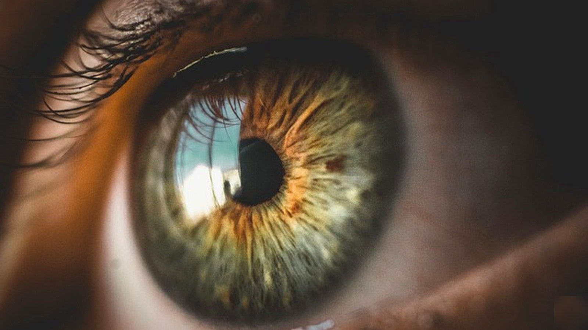

Iris recognition is a biometric identification technology that uses unique pattern recognition in an individual's iris data for identity verification. This technology is extremely reliable and accurate, providing a secure and efficient solution for various applications, including immigration control, border control, law enforcement, and access control.
Iris recognition technology uses high-quality image capture and iris analysis techniques to analyze the patterns in a person's iris. The iris is the colored ring surrounding the pupil of the naked eye, and it contains distinctive patterns that remain stable throughout a person's lifetime. This biometric authentication systems use infrared light to illuminate the iris, enhancing the contrast between the iris and the pupil, which enables the capture of a clear image. This image is then converted into a digital code or biometric template, which can be compared against stored templates in a computer database for identification.
Iris scanners use specialized cameras, called iris recognition cameras, to capture an individual's iris. These cameras are designed to operate in visible and invisible infrared light conditions, allowing for capturing high-quality photos even in challenging lighting environments.
The iris recognition camera focuses on the individual's naked eye during the iris recognition enrollment process. It emits near-infrared light, absorbed by the eye's melanin, creating a high contrast between the iris and the pupil. This contrast enables the camera to capture a clear, detailed image of the iris, essential for accurate identification.
Once the biometric data has been captured, it undergoes a series of image processing steps to enhance the quality and remove any artifacts or distortions. This process includes adjusting the contrast, removing specular reflections, and applying image compression techniques to reduce the image size without compromising quality.
Following image processing, the iris recognition algorithms analyze the unique patterns found in the image and extract a set of features, which are then encoded into a compact digital code or biometric template. This template is a mathematical representation of the individual's iris and can be compared against other templates in a computer database for identification purposes.
The final step in the iris recognition process is iris matching, which involves comparing the biometric template created during the image processing stage against stored templates in a computer database. The iris recognition software calculates a similarity score for each comparison. If the score exceeds a predetermined threshold, the system determines that the two templates belong to the same person.
The accuracy of iris matching depends on the quality of the captured iris images, the iris recognition algorithms' effectiveness, and the computer database's size. High-quality pictures and advanced algorithms can help to minimize the risk of false matches and ensure that the system accurately identifies individuals.
Iris recognition is one of the most accurate biometric identification technologies. It has a meager false acceptance rate (FAR) and false rejection rate (FRR), making it ideal for applications where security is a top priority.
The patterns found in an individual's iris remain stable over time, making iris recognition a reliable long-term solution for biometric identification.
Unlike fingerprint recognition scanners, iris recognition does not require physical contact, making it a more hygienic and user-friendly option.
Even identical twins have distinct iris patterns, ensuring that iris recognition provides high individual differentiation unlike other technologies as facial recognition.
Iris scanning technology can perform identification in a matter of seconds, providing a fast and efficient solution with high match rates for identity verification.
Iris recognition technology can be easily integrated with security systems, such as access control and surveillance systems.
Iris recognition is widely used at airports and border crossings around the world to verify travelers' identities, ensuring that individuals are who they claim to be. This automated identification method helps reduce the risk of human error and speeds up immigration control processes. In addition to enhancing security, iris scanners provide a convenient and user-friendly experience for travelers, as they do not require physical contact or the removal of contact lenses or eyeglasses.
Iris recognition technology is employed by law enforcement agencies to positively identify suspects and verify individuals' claimed identities during investigations. Mobile offender iris recognition technology utilize iris scanning technology to enable officers to identify individuals in the field quickly and accurately. This technology has proven invaluable in cases where fingerprint scans or facial recognition may not be reliable, such as in situations involving injuries or disguises. Iris recognition also provides a contactless solution, reducing the potential for contamination of evidence or the transmission of infectious diseases.
Iris scanning technology grant access to secure facilities like government buildings, military installations, and research laboratories. These systems offer high security by ensuring that only authorized individuals can gain entry. By utilizing iris biometrics, organizations can protect sensitive information and assets from unauthorized access and maintain an audit trail of entry and exit data for security and compliance purposes.
Iris recognition technology is increasingly being adopted in the healthcare industry to address patient's privacy concerns and ensure the secure storage of medical records. By using iris biometrics, healthcare providers can identify patients accurately and restrict access to sensitive information. This technology also helps to prevent medical identity theft and reduce the risk of human error, such as administering medication to the wrong patient or mixing up medical records.
Iris recognition is implemented in banking and financial use cases to enhance security and customer convenience. Banks and financial institutions use iris scanning for identity verification in ATM transactions, online banking, and customer service interactions. This technology provides a more secure and efficient alternative to traditional authentication methods, such as PINs and passwords, which can be easily forgotten or compromised.
Educational institutions are leveraging iris recognition technology to improve security and streamline administrative processes. Iris scanning can be used for access control to secure areas, such as computer labs and testing centers, as well as for student identification during exams or attendance tracking. This technology helps to prevent unauthorized access, cheating, and fraudulent activity while providing a user-friendly experience for students and staff.
Iris recognition systems are designed to resist spoofing attempts, such as using photographs, videos, or prosthetic eyes. Advanced iris recognition algorithms analyze the captured iris image for signs of artificiality and can detect most attempts to fool the system. While no biometric technology is foolproof, iris recognition is considered one of the most secure and difficult to deceive.
The cost of implementing an iris recognition system depends on various factors, including the installation size, the number of users, the specific hardware and software requirements, and the level of integration with existing systems. Prices range from a few thousand dollars for small-scale implementations to hundreds of thousands for large-scale installations. Therefore, it is essential to carefully assess your organization's needs and budget before selecting an iris recognition solution.
Yes, iris recognition is a biometric technology. Biometrics is the measurement and analysis of unique physical or behavioral characteristics for identification or authentication. In the case of iris recognition, the technology measures and analyzes the unique patterns found in an individual's iris to verify their identity.
Iris recognition is considered one of the best biometric technologies due to its high accuracy, speed, stability, and non-contact nature. The unique patterns in an individual's iris are highly distinctive and remain stable throughout their lifetime, making iris recognition a reliable long-term solution for biometric identification. Additionally, iris recognition systems are fast, efficient, and do not require physical contact, making them more user-friendly and hygienic than other biometric methods, such as fingerprint scanning.
Retina and iris scans are two types of biometric identification technologies that focus on different parts of the eye. Retina scans analyze the pattern of blood vessels at the back of the eye, while iris scans examine the unique ways found in the colored part surrounding the pupil. Iris recognition is generally considered more practical and user-friendly than retina scanning, as it requires less cooperation from the subject and does not involve shining light directly into the eye.
Iris recognition is a safe and non-invasive method of biometric identification. The technology uses near-infrared light to illuminate the iris, which is harmless to the eye and not associated with known health risks. Additionally, the non-contact nature of iris recognition eliminates the potential for transmitting infectious diseases or contamination of evidence during the identification process.
An iris scan typically takes just a few seconds to complete. The iris scanner captures a high-quality image of the iris, processes the image, and compares the resulting biometric template against stored templates in a computer database. The entire process, from capture to identification, can be completed in seconds, making iris recognition a fast and efficient solution for identity verification.
Iris recognition technology offers numerous advantages over other biometric identification methods, including high accuracy, speed, and user-friendliness. In addition, its wide range of applications, from immigration control and border security to healthcare and education, demonstrates its versatility and effectiveness in various settings. As iris recognition technology advances and becomes more accessible, it is poised to play an increasingly significant role in ensuring security and streamlining identification processes worldwide.
Developers: see the iris recognition SDK and API.